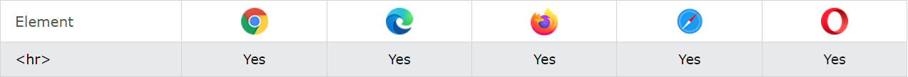
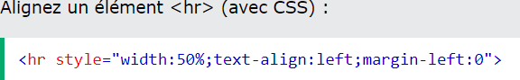
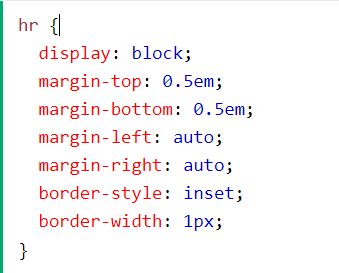

Définir changements de thématiques :

Définition et usage :
La < hr> balise définit une rupture thématique dans une page HTML (par exemple un changement de sujet).
L' < hr> élément est le plus souvent affiché sous la forme d'une règle horizontale utilisée pour séparer le
contenu (ou définir une modification) dans une page HTML.
Prise en charge du navigateur :
Attributs globaux :
La < hr> balise prend également en charge les attributs globaux en HTML.
Attributs d'évènements :
La < hr> prend également en charge les attributs d'évènement en HTML.
Exemples :
Css default :
